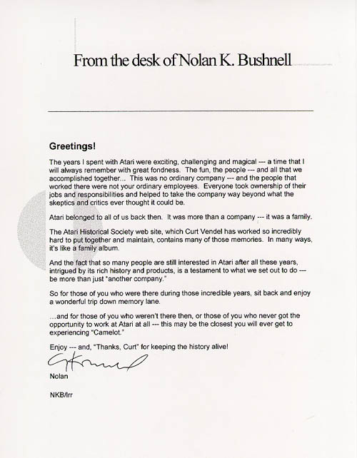

This letter was mailed to The Atari Museum founder: Curt Vendel from Nolan Bushnell's business coordinator, Loni Reeder. It is both a pleasure and a unique privilege to have received such a wonderful compliment from the man who's vision created the very company that has touched everyone's lives in one way or another. Although Atari is far from what it was in its early days when Nolan first started it, Nolan and everyone else that ever worked for Atari can be proud to know how much of a profound effect Atari has had on so many people. Even today there is a huge interest in Atari, its accomplishments, its people and the magic it has brought to all.
Thank you Nolan... for your vision, spirit and love of making people have fun, in really neat ways :)
Respectfully,
Curt Vendel
Atari Historian,
The Atari Museum.